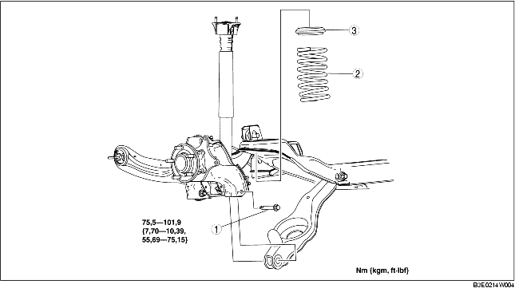

1. Verwijder de rijniveausensor achter. (Zie VERWIJDEREN/PLAATSEN RIJNIVEAUSENSOR.)
2. Verwijder de stabilisatorstang achter. (Zie VERWIJDEREN/PLAATSEN STABILISATORSTANG ACHTER.)
3. Verwijder de onderdelen in de aangegeven volgorde, zie de tabel.
4. Plaats de onderdelen in omgekeerde volgorde.
5. Controleer de wieluitlijning en corrigeer deze indien nodig.
(Zie ACHTERWIELUITLIJNING.)

.
1. Ondersteun de onderste draagarm achter met een krik.
2. Draai de binnenste bout van de onderste draagarm achter los.
3. Verwijder de buitenste bout van de onderste draagarm achter.
1. Plaats de krik onder de draagarm achter en laat de krik langzaam zakken.
2. Breng het bovenste uiteinde van de schroefveer achter in lijn met de uitsparing in het rubber van de bovenste veerschotel.
3. Breng het onderste uiteinde van de schroefveer achter in lijn met de uitsparing in het rubber van de onderste veerschotel.
4. Plaats de buitenste bout van de onderste draagarm.